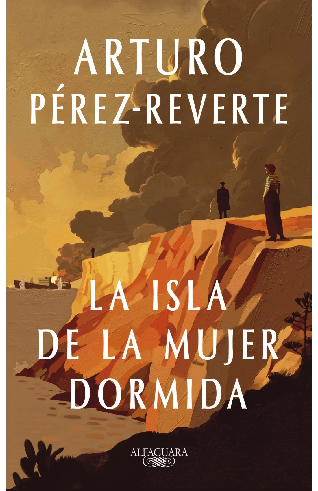

¿Estás buscando inspiración para regalar un libro? ¿No sabes qué libro leer ahora? Descubre los libros más vendidos y conoce cuáles son los libros más leídos en España. Seguro que encuentras el libro que estabas buscando, déjate sorprender.
| LIBRO | TITULO | AUTOR | CATEGORIA |
|---|---|---|---|
.jpeg) |
Black Water | Michael McDowell | Terror, narrativa. |
 |
La isla de la mujer dormida | Arturo Pérez-Reverte | Novela contemporánea, narrativa española. |
| El Clan | Carmen Mola | Novela Negra. | |
.jpeg) |
La reina roja | Juan Gomez Jurado | Novela Negra. |
.jpeg) |
Meridiano de sangre | Cormac McCarthy | Narrativa. |
.jpeg) |
El Bestiario de Axlin | Laura Gallego | Fantasía y magía. |
.jpeg) |
Frankenstein | Mary Shelley | Novela Terror. |
.jpeg) |
El niño que perdió la guerra | Julia Navarro | Novela contemporánea, narrativa. |
.jpeg) |
Los pilares de la tierra | Ken Follett | Novela histórica. |
| Wonder. La lección de August | R.J.Palacio | Temas sociales. |